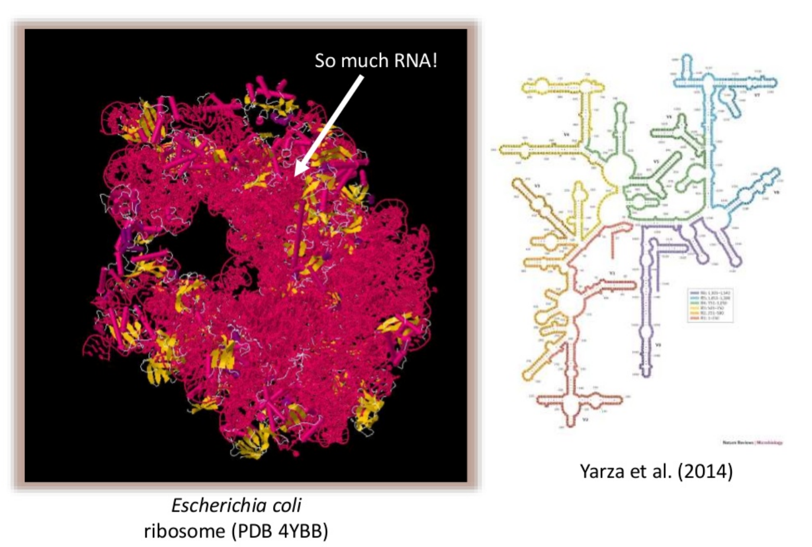

Introduction to Microbiome Analysis
Contributors
Microbiome Analysis
Speaker Notes
- Microbiome analysis is the examination of the collection of microorganisms (microbes) in a particular environment, such as the human body, soil, water, or any other habitat.
- This analysis aims to understand the composition, diversity, and functions of these microbial communities.
Overview
- Why study the microbiome?
- 2 different approaches
- Amplicon sequencing
- Shotgun sequencing
- Analysis pipelines
- Visualisation options
Speaker Notes
- Studying the microbiome is essential because it plays a crucial role in human health by influencing digestion, immunity, and disease susceptibility.
- It also helps in understanding and improving agricultural productivity and environmental sustainability through insights into soil and plant microbiomes.
- Additionally, microbiome research can lead to the development of new medical therapies, diagnostics, and biotechnological applications.
- DNA-based microbiome analysis is mainly based on two techniques: Amplicon sequencing and Shotgun sequencing.
- Microbiome analysis required sophisticated analysis pipelines for the processing and the interpretation of the sequence data.
Why study the microbiome?
.pull-left[
- Health care research
- Humans are full of microorganisms
- Skin, gut, oral cavity, nasal cavity, eyes, ..
- Affects health, drug efficacy, etc
] .pull-right[
.image-100[  ]
]
]
- Sometimes referred to as your second genome
- ~10 times more cells than you
- ~100 times more genes than you
- ~1000s different species
Speaker Notes
- The term “second genome” refers to the vast collection of microbial genes present in and on the human body, which outnumber human genes by about 100 to 1.
- This microbial genetic material plays a crucial role in various physiological processes, such as digestion, immunity, and even mental health, making it an integral part of our overall genetic makeup and health.
Why study the microbiome?
- Environmental studies
- Microbes in the soil affect plants and animals
- Improve agriculture
.image-75[  ]
]
Speaker Notes
- In environmental studies, the microbiome refers to the diverse communities of microorganisms living in various environments such as soil, water, and plants.
- These microbial communities are critical for ecosystem functions like nutrient cycling, soil fertility, pollutant degradation, and plant health, thus playing a vital role in maintaining environmental balance and sustainability.
Types of microbiome analysis
.image-75[ ]
.footnote[Image source: 10.1039/D3MO00089C]
Speaker Notes
- Meta-omics refers to a suite of high-throughput techniques used to study various aspects of microbial communities in an integrated way, providing a comprehensive view of their functions, structures, and interactions.
- Metagenomics involves sequencing the entire genetic material from a microbial community, offering insights into the diversity, composition, and potential functions of the microorganisms.
- Metatranscriptomics examines RNA transcripts to assess gene expression and microbial responses to environmental changes.
- Metametabolomics analyzes the small molecules produced by microbial metabolism to understand their metabolic activities and interactions.
- Metaproteomics focuses on studying microbial proteins to uncover their roles, expression levels, and interactions.
- Amplicon sequencing, though more targeted, involves sequencing specific genetic regions to profile microbial diversity and abundance.
Shotgun vs Amplicon
.pull-left[
.image-75[  ]
]
Shotgun Sequencing
- Sequence all DNA
- More information
- Higher complexity
- Higher cost ]
.pull-right[
.image-75[  ]
]
Amplicon Sequencing
- Sequence only specific gene
- No functional information
- Less complex to analyse
- Cheaper ]
Speaker Notes
- Shotgun sequencing analyzes the entire genetic material in a sample, providing comprehensive and detailed information about microbial community structure and function, but it is complex and costly.
- Amplicon sequencing targets specific regions of microbial DNA, such as the 16S rRNA gene, offering a cost-effective and simpler method for profiling microbial communities, though it lacks detailed functional insights and is subject to amplification bias.
- Shotgun sequencing is ideal for detailed metabolic and functional studies, while amplicon sequencing is suitable for assessing microbial composition and diversity.
Amplicon
- Targetted approach, e.g. 16S (bacteria), 18S (eukaryotes), ITS (fungi)
- Amplify gene of specific taxonomic group, i.e. not host or environment

Speaker Notes
- Amplicon sequencing is a targeted approach that focuses on sequencing specific genetic regions to identify and analyze microbial communities.
- For bacteria, the 16S rRNA gene is commonly targeted, while the 18S rRNA gene is used for eukaryotes, and the ITS region is targeted for fungi.
- This method allows for efficient and cost-effective profiling of microbial composition and diversity by amplifying and sequencing these specific genetic markers.
Amplicon
- Highly conserved gene: easy to target across all bacteria
- With variable regions: distinguish between genus

Speaker Notes
- The 16S rRNA gene used in amplicon sequencing for bacteria consists of both conserved and variable regions.
- The conserved regions are highly similar across different bacterial species, providing anchor points for primers used in sequencing.
- The variable (V) regions, on the other hand, are more diverse and unique to different species, allowing for the differentiation and identification of bacteria within a sample.
- Sequencing these V regions enables researchers to profile the bacterial community and understand its composition and diversity.
Amplicon
- Pros
- Well-established
- Inexpensive ($50-$100/sample)
- Cons
- V-region choice can bias results
- Is based on a very well conserved gene, making it hard to resolve species and strains
Speaker Notes
- Amplicon sequencing is cost-effective and simpler than other methods, making it accessible for routine studies and straightforward to analyze due to its focus on specific genetic regions.
- However, it has limitations, such as only providing information about the targeted regions, which may miss some microbial diversity and functional insights.
- Additionally, the method can introduce amplification biases and may not differentiate closely related species or strains effective
Shotgun metagenomics
-
Aims to sequence the “whole” metagenome
- Pros:
- Not biased by amplicon primer set
- Not limited by conservation of the amplicon
- Can also provide functional information
- Cons:
- Environmental contamination, including host
- More expensive ($1000+/sample)
- Complex data analysis
- Requires high performance computing, high memory, high compute capacity
Speaker Notes
- Shotgun metagenomics is a comprehensive approach to analyzing microbial communities by sequencing all the genetic material present in a sample, rather than focusing on specific regions.
- This technique involves fragmenting the entire DNA from a sample, sequencing these fragments, and then using computational tools to assemble and analyze the data.
- By capturing the complete genetic makeup of all microorganisms, including bacteria, archaea, viruses, and eukaryotes, shotgun metagenomics provides detailed insights into the diversity, composition, and functional potential of microbial communities.
- This method allows for a broad and deep understanding of microbial interactions and functions, though it is often more complex and costly compared to targeted sequencing approaches.
- Additionally, shotgun metagenomics can be affected by host contamination, which may complicate the interpretation of microbial data.
End-to-End
Every step in this process can have serious impact on the results
Speaker Notes
- In end-to-end metagenomic workflows, every step—from sample collection to data analysis—can significantly impact the final results.
- Sample collection methods can introduce biases or contaminants, affecting the accuracy of microbial representation.
- During DNA extraction, variations in protocols or efficiencies can alter the quantity and quality of genetic material obtained.
- Sequencing technologies and their associated errors can introduce noise or gaps in the data.
- Data processing, including assembly and annotation, relies on computational tools and databases that may -influence the interpretation of microbial diversity and functions.
- Finally, the integration and analysis of results can be affected by the algorithms used and the quality of the reference databases.
- Each of these steps must be carefully controlled and standardized to ensure reliable and reproducible outcomes in metagenomic studies.
Bioinformatics

Roche 454 GS: ~ 100.000 reads
Illumina MiSeq: ~ 25.000.000 reads
Shotgun: ~ ? reads
Speaker Notes
- In metagenomics, “drowning in NGS data” refers to the overwhelming volume of data generated by next-generation sequencing technologies.
- This issue arises because NGS can produce vast amounts of sequence reads from complex microbial communities in a single experiment, creating challenges in data management, processing, and interpretation.
- Managing and organizing this massive data set requires substantial computational resources, while analyzing it involves quality control, read assembly, taxonomic classification, and functional annotation, all of which add complexity and computational demands.
- Extracting meaningful biological insights from such extensive data requires advanced bioinformatics expertise to navigate potential noise and errors and to ensure that findings are robust and reproducible.
Analysis pipelines

Amplicon analysis variants:
- OTU: operational taxonomic units
- ASV: amplicon sequence variants
Speaker Notes
- Amplicon sequencing focuses on specific genetic regions, such as the 16S rRNA gene for bacteria, offering a cost-effective and simpler pipeline that provides insights into microbial community composition but may miss broader diversity and functional details.
- In contrast, shotgun metagenomics sequences all genetic material, delivering a comprehensive view of microbial diversity and functional potential, though it requires more complex and expensive analysis.
- Operational Taxonomic Units (OTUs) group sequences based on similarity, which can obscure finer taxonomic distinctions and is often used in amplicon pipelines.
- Amplicon Sequence Variants (ASVs) represent exact sequences without grouping, offering higher resolution and more accurate taxonomic identification, and are increasingly used in modern amplicon pipelines for greater precision in microbial profiling.
Pre-processing

- There are a lot of ways to filter and trim your data
- Trade-off between quality and amount of information retained
Speaker Notes
- Preprocessing in metagenomics involves a series of steps to prepare raw sequencing data for analysis, including quality control, trimming of low-quality sequences, removal of contaminants, and filtering out redundant or erroneous data.
- This stage is crucial for ensuring that the data used for downstream analysis is accurate and reliable.
- The trade-off between quality and amount of information retained is a key consideration in preprocessing.
- On one hand, stringent quality control measures improve the accuracy of the data by removing errors and contaminants, but this can also lead to the loss of some useful information, particularly from low-abundance or poorly sequenced organisms.
- On the other hand, retaining more data might include lower-quality sequences or noise, which can complicate data analysis and interpretation.
- Balancing these factors involves optimizing preprocessing steps to retain the most informative and accurate data while minimizing errors and maintaining sufficient coverage for meaningful analysis.
OTU Clustering / Denoising
.pull-left[ OTU clustering:
- Cluster on 97% sequence similarity for genus-level differentiation
- OTUs depend on the data set: no comparability of data sets
.image-75[  ]
]
]
.pull-right[ ASV Denoising:
- Discriminate sequence variations from sequencing errors
- Based on an error model and the assumption that sequences containing errors are less likely observed repeatedly
.image-90[  ]
]
]
Speaker Notes
- OTU clustering groups similar sequence reads into Operational Taxonomic Units based on a predefined similarity threshold, which can simplify the data but may mask finer taxonomic differences and reduce resolution by lumping closely related species together.
- In contrast, ASV denoising involves identifying and retaining exact sequence variants without grouping, providing higher resolution and more precise taxonomic identification by distinguishing unique sequences and reducing errors, though it requires more sophisticated algorithms and computational resources.
Chimera Removal
- During PCR multiple sequences can combine to form a hybrid
- Must be removed from your data for better results

Speaker Notes
- Chimera removal is a crucial step in microbiome data processing that involves identifying and eliminating chimeric sequences—artificial DNA sequences that arise from the incorrect joining of two or more distinct sequences during PCR amplification.
- These chimeras can distort the representation of microbial communities by introducing erroneous sequences that do not reflect actual biological entities.
- The removal of chimeric sequences is essential for ensuring accurate and reliable results in downstream analyses, such as taxonomic classification and diversity assessment.
Search marker database and taxonomy assignment
- Homology with reference databases
-
Amplicon

-
Shotgun: MetaPhlAn2 database
- ~1M unique clade-specific marker genes
- ~17,000 reference genomes (bacterial and archaeal, viral and eukaryotic)
-
- Accuracy depends on quality and completeness of database used
- Databases are inevitable incomplete
Speaker Notes
- In microbiome studies, searching a marker database involves comparing sequencing data to a reference database to identify microbial sequences.
- For example, in amplicon sequencing, sequences might be compared to the SILVA database, which contains rRNA gene sequences, to classify microorganisms based on known genetic markers.
- In shotgun metagenomics, the MetaPhlAn database can be used, which contains unique marker genes for various microorganisms, enabling precise taxonomy assignment and detailed profiling of the microbial community.
Search functional database
- Databases to identify gene families
- UniRef50
- UniRef90
- Grouping in other functional categories
- MetaCyc Reactions
- KEGG Orthogroups (KOs)
- Pfam domains
- Level-4 enzyme commission (EC) categories
- EggNOG (including COGs)
- Gene Ontology (GO)
- Informative GO
- Pathway reconstruction
Speaker Notes
- For functional analysis, researchers can use databases like UniRef50 and UniRef90, which cluster sequences into representative sets to help identify proteins and their functions.
- MetaCyc Reactions provides detailed information on metabolic pathways and enzymatic reactions, allowing the identification of metabolic capabilities within the microbiome.
- EggNOG offers orthologous group annotations, helping to predict gene functions and evolutionary relationships.
- These functional databases provide deeper insights into the biological roles and potential activities of the microbial community, complementing the taxonomic data.
Results: OTU table

Speaker Notes
- The results of microbiome studies are typically compiled into a comprehensive summary such as an OTU table or a similar data structures.
- In this table, each row represents an OTU, while each column represents a different sample analyzed.
- The cells within the table contain values indicating the abundance of each OTU in each sample, often presented as counts or relative frequencies.
- This format provides a detailed overview of the microbial community composition across multiple samples, allowing researchers to compare diversity and abundance patterns, and perform statistical analyses to assess differences between sample groups, microbial diversity, and correlations with environmental or health-related variables.
- Comparable tables for other modality of microbiome studies are taxonomy tables, gene tables and pathway tables.
Results: Visualizations
- Krona
- interactive exploration of sample taxonomy

Speaker Notes
- Visualizations of microbiome data are crucial for several reasons.
- They transform complex, high-dimensional data into interpretable and accessible formats, allowing researchers to quickly grasp the composition and diversity of microbial communities.
- Krona is a visualization tool used to explore microbiome data from an OTU table interactively.
- First, the OTU table, with taxonomic classifications and abundance data, is formatted into a compatible file for Krona.
- The software then processes this file to create an interactive, multi-layered pie chart where each layer represents different taxonomic levels, such as phylum, class, order, family, genus, and species.
- Users can click on segments to drill down into lower taxonomic levels, with the segment sizes indicating the relative abundance of each taxon.
- This allows for intuitive and interactive exploration of the microbial community structure, making it easy to identify patterns and differences across samples.
Results: Visualizations
- Phinch
- BIOM file input
- various visualizations
- multi-sample data

Speaker Notes
- Phinch is another powerful tool for visualizing microbiome data, offering interactive and customizable charts that help in exploring complex datasets.
Differential analyses
.footnote[Figure taken from: https://doi.org/10.1101/2021.01.20.427420] Speaker Notes
- Differential microbiome analysis using tools like MaAsLin2 involves comparing microbial community profiles between different groups or conditions to identify significant differences in microbial abundance or diversity.
- MaAsLin2 uses linear models to handle complex, high-dimensional data and adjust for potential confounders, providing robust statistical insights into which microbes are differentially abundant.
- This analysis helps in understanding how microbial shifts correlate with various factors, such as disease states or environmental changes, thereby uncovering potential biomarkers and functional implications.
Diversity
Speaker Notes
- Alpha diversity measures the diversity within a single sample, reflecting the number of species and their relative abundances.
- Beta diversity compares microbial communities between samples, highlighting differences in species composition and abundance.
- Together, these metrics provide insights into both the internal diversity of communities and how they vary across different conditions.
Assembly

Speaker Notes
- Microbiome assembly involves reconstructing the complete genomes of microorganisms from sequencing data to understand their functional potential and diversity.
Binning

Speaker Notes
- After the initial assembly of contigs from sequencing data, binning helps to differentiate and categorize these contigs based on their genetic similarity, coverage, and other characteristics, effectively reconstructing individual microbial genomes from the mixed sample.
Thank you!
This material is the result of a collaborative work. Thanks to the Galaxy Training Network and all the contributors! Tutorial Content is licensed under
Creative Commons Attribution 4.0 International License.
Tutorial Content is licensed under
Creative Commons Attribution 4.0 International License.